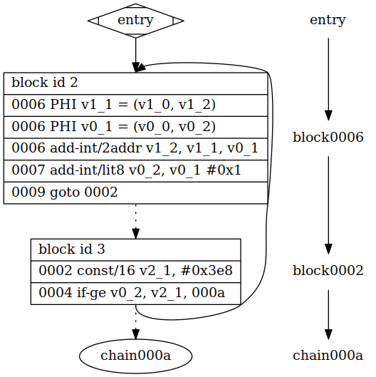

Dalvik: JIT
Table of Contents
1 Dalvik: JIT
1.1 common_updateProfile
JIT 的入口是 common_updateProfile, 例如, 在 OP_IF_EQ 等跳转指令处会针对 branching target 处的指令进行 common_updateProfile 的检查.具体的, common_updateProfile 会在以下情况下被调用:
- 跳转指令的 branch target
- 解释器的入口 (dvmMterpStdRun)
- 以及各种 `invoke` 的入口
这些指令都会做为 trace head. 例如下面的代码:
public static void main(String[] args) { int result = 0; for (int i = 0; i < 1000; i++) { result += i; } }
循环对应的 byte code 为:
0 :goto_2 1 const/16 2 if-ge v0, v2, :cond_a 3 add-int/2addr v1, v0 4 add-int/lit8 v0, v0, 0x1 5 goto :goto_2
第 3 行因为是第 2 行的 branching target, 所以会成为一个 trace head. 而 trace 只会结束于条件跳转(非 goto 的跳转), invoke, return, throw 或 too large (1000 条 trace), 所以第 3 行开始的 trace 最终会结束于第 2 行 if-ge, 最终这条 trace 的结果是:
09-22 09:59:18.340 D/dalvikvm( 2259): Compiler: Building trace for main, offset 0x6 09-22 09:59:18.340 D/dalvikvm( 2259): 0xa986f1f4: 0x00b0 add-int/2addr v1, v0, (#0) 09-22 09:59:18.340 D/dalvikvm( 2259): 0xa986f1f6: 0x00d8 add-int/lit8 v0, v0, (#1) 09-22 09:59:18.340 D/dalvikvm( 2259): 0xa986f1fa: 0x0028 goto (-7) 09-22 09:59:18.340 D/dalvikvm( 2259): 0xa986f1ec: 0x0013 const/16 v2, (#1000), (#0) 09-22 09:59:18.340 D/dalvikvm( 2259): 0xa986f1f0: 0x0035 if-ge v0, v2, (+6)
common_updateProfile: // 这里负责从 thread->pJitProfTable 中获得该 rPC 对应的 threshold // (初始为最大值 40, 每命中一次减一)若 threshold 已经为 0, 说明该代 // 码是 hot 的, 然后会跳到 common_Profile 进行 JIT 相关操作. 否则直 // 接通过 GOTO_NEXT 继续执行 interp common_Profile: // 根据 pc 查找该 trace 是否已经被编译 call dvmJitGetTraceAddrThread # (pc, self) // 若还没有被编译出来 // 通过查看 interpBreak->subMode, 确定是否已经在编译 (kSubModeJitSV) movzwl offThread_subMode(%ebx), %ecx and $(kSubModeJitTraceBuild | kSubModeJitSV), %ecx // 若已经在编译, 则继续以 interp 方式执行 jne 3f # already doing JIT work, continue FETCH_INST // 否则 call dvmJitCheckTraceRequest // 开始 trace build 模式 dvmEnableSubMode (self, kSubModeJitTraceBuild); updateInterpBreak // 修改了 curHandlerTable, 后续 byte code 的解释会通过这个 // altHandlerTable 解释 newValue.ctl.curHandlerTable = (newValue.ctl.breakFlags) ? thread->altHandlerTable : thread->mainHandlerTable;
当 dvmJitCheckTraceRequest 决定开始 trace build 模式后, 后续所有的byte code 的解释会通过 altHandlerTable 进行, 而 altHandlerTable 对所有byte code 的解释基本都是一样的, 例如:
.L_ALT_OP_MOVE: /* 0x01 */ /* File: armv5te/alt_stub.S */ /* * Inter-instruction transfer stub. Call out to dvmCheckBefore to handle * any interesting requests and then jump to the real instruction * handler. Note that the call to dvmCheckBefore is done as a tail call. * rIBASE updates won't be seen until a refresh, and we can tell we have a * stale rIBASE if breakFlags==0. Always refresh rIBASE here, and then * bail to the real handler if breakFlags==0. */ ldrb r3, [rSELF, #offThread_breakFlags] adrl lr, dvmAsmInstructionStart + (1 * 64) ldr rIBASE, [rSELF, #offThread_curHandlerTable] cmp r3, #0 // 检查 interpBreak->subMode, 若不是 jni 模式, 则直接调用 // mainHandlerTable 中相应的 entry (dvmAsmInstructionStart 对应于 mainHandlerTable) bxeq lr @ nothing to do - jump to real handler EXPORT_PC() mov r0, rPC @ arg0 mov r1, rFP @ arg1 mov r2, rSELF @ arg2 // 否则, 调用 dvmCheckBefore 进行 trace build b dvmCheckBefore @ (dPC,dFP,self) tail call if (self->interpBreak.ctl.subMode & kSubModeJitTraceBuild): dvmCheckJit(pc, self); // 若 trace build 正在进行 if self->jitState == kJitTSelect: self->trace[self->currTraceRun].info.frag.numInsts++; self->totalTraceLen++; self->currRunLen += len; else if self->jitState == kJitTSelectEnd: // trace build 结束, 提交给 compiler 编译 dvmCompilerWorkEnqueue
而 jitState 变为 kJitTSelectEnd 的时机实际上就是 trace 结束的条件: 条件跳转(非 goto 的跳转), invoke, return, throw 或 too large (1000 条 trace), 主要是 dvmCheckJit 中的这段代码:
dvmCheckJit
if (!dexIsGoto(flags) &&
((flags & (kInstrCanBranch |
kInstrCanSwitch |
kInstrCanReturn |
kInstrInvoke)) != 0)):
self->jitState = kJitTSelectEnd;
1.2 dvmCompileTrace
common_updateProfile 会导致一条 trace 被记录下来, 最终会通过 dvmCompileTrace 进行编译.
1.2.1 MIR
生成 MIR 代码主要在 Frontend.cpp 中.
dvmCompileTrace 的第一步是构造各种 BasicBlock, 并且将这些 BasicBlock 通过 block->taken 和 block->fallThrough 连接起来. 最终这些 block 构造成一个树型结构.
这些 BasicBlock 中, 有一些代表着 trace 中一个 trace run 对应的 MIR, 有一些只是虚拟的 block, 本身并不对应于 trace 中具体指令, 但它们会通过 block 的 type 被后续 MIR2LIR 部分的代码识别, 编译出一些特殊的 LIR.
首先, 生成一个 entry block, 然后对每一个 trace run , 生成一个 kDalvikByteCode 类型的 BasicBlock, 且这些 BasicBlock 的 MIR 链表中会包含通过 parseInsn 生成的 MIR (每个 MIR 结构对应一个 opcode 及其参数)
所有 kDalvikByteCode 类的 BasicBlock 生成后, 需要扫描这些 BasicBlock, 使它们通过 block->taken 和 block->fallThrough 连接起来. 扫描的方法就是若 BasicBlock A 的 targetOffset 和另一个 BasicBlock B 的 startOffset相同, 则 A->taken = B, 若 A->fallThroughOffset == C->startOffset, 则 A->fallThrough = C.
若 BasicBlock 是因为 trace 过长结束, 或者 BasicBlock 的 taken 和 fallthrough 需要引用的 BasicBlock 在这些 BasicBlock 中不存在, 则上一步无法生成 taken 和 fallThrough 连接. 这时需要生成一些称之为 chaining cell 的虚 BasicBlock, 这些 BasicBlock 的类型为 kChainingCellNormal, 本身并不包含任何 MIR. 后续 MIR2LIR 时会将这些 chaining cell 翻译为 dvmJitToInterpNormal 调用, 而 dvmJitToInterpNormal 会负责从 JitCodeCache 中查找是否存在一个真正 BasicBlock 与该 chaining cell 引用的地址一致, 若存在, 则通过 dvmJitChain 用真正的 BasicBlock 对应的 JitCodeCache 地址替换 chaining cell 对应的地址, 否则就切换到解释器模式去解释执行后续的代码.
当 BasicBlock 以及 taken, fallThrough, 包括 chaining cell 建立完成后, 就可以进行下一步操作了.
以一个简单的两条指令的 trace 为例:
const/16 v2, (#1000), (#0) if-ge v0, v2, (+6)
最终生成 BasicBlock 的情况如下:
Block 0 (Entry Block) (insn 0002 - 0002 empty) Fallthrough : block 1 (0002) Block 1 (Code Block) (insn 0002 - 0004) Taken branch: block 3 (000a) Fallthrough : block 2 (0006) Block 2 (Normal Chaining Cell) (insn 0006 - 0006 empty) Block 3 (Normal Chaining Cell) (insn 000a - 000a empty) Block 4 (PC Reconstruction) (insn 0000 - 0000 empty) Block 5 (Exception Handling) (insn 0000 - 0000 empty)
其中只有 Block 1 是 kDalvikByteCode 类型的 code block.
Block 2, Block 3 是生成的 chaining cell, 分别做为 Block 1 的 taken 和 fallthrough.
1.2.1.1 CFG
dalvik 自带了一个 dvmDumpCFG 函数, 若当前的 trace 构成一个 loop, 则会 dump 出 BasicBlock 对应的 CFG,以这段 java 为例:
for (int i = 0; i < 1000; i++) { sum += i; }
对应的 smali 代码为:
1 :goto_2 2 const/16 v2, 0x3e8 3 if-ge v0, v2, :cond_a 4 add-int/2addr v1, v0 5 add-int/lit8 v0, v0, 0x1 6 goto :goto_2
这段代码对应一个 trace, 对应两个 trace run:
- 第一个 trace run 对应于 4~6 行.
- 第二个 trace run 对应于 2~3 行.
因为 trace head 应该是条件跳转的 branching target, 所以 L4 是 整个 trace 的 trace head.
goto 指令不会导致 trace 中断, 但 goto 指令会将 trace 分为两个 trace run. 所以 :goto_2 对应的 L2 代表着另一个 trace run.
最后 trace 结束于 L3, 因为它是一个条件跳转指令.
所以最终一个 trace 对应着两个 trace run, 即两个 kDalvikByteCode 类型的 BasicBlock.
这两个 BasicBlock 加上 entry block 及 chaining cell 后最终形成的 CFG 如图所示:

从 CFG 可以看到, 额外生成了一个名为 chain000a 的 chaining cell, 因为 block0002 的 taken 对应的 trace run 在本次 trace compilation 过程中没有生成, 但 fallthrough 对应的 trace run 已经生成了 (即 block 0006), 所以需要生成一个 chaining cell 做为 block0002 的 taken.
从 CFG 中还可以看到, 在 block0006 的开头插入了两个 PHI 分别是 v1_1, v0_1, 这两个 PHI 即是 SSA (Static Single Assignment, 静态单值引用) 中 PHI 函数: 之所以需要插入 PHI, 是因为 block0006 的入度不为 1.
1.2.1.2 SSA
1.2.2 LIR
生成 LIR 的代码主要在 codegen 目录下的 CodegenDriver.cpp 中.
BasicBlock 生成后, 即 MIR 生成后, 会通过 dvmCompilerMIR2LIR 生成 LIR.
以 if-ge 为例, 说明 MIR -> LIR 的过程:
MIR2LIR 的过程大致是:
遍历所有的 BasicBlock: 若 blockType 不是 chaining cell, 则通过 dvmCompilerAppendLIR(cUnit, (LIR *) &labelList[i]) 添加一个 pseudo LIR 后面处理 chaining cell 也会插入一个 pseudo LIR. 这里没有为 chaining cell 插入 pseudo LIR 是因为 pseudo LIR 后面必须紧接着该 BasicBlock 的其他 LIR 因为 chaining cell 是在遍历完 kDalvikByteCode 后处理的, 所以会在那时再插入 pseudo LIR. 若 blockType 为 kDalvikByteCode: 遍历该 BasicBlock 中的所有 MIR: 获得 MIR 的 format (即 dalvik opcode 的 format id) // 以 if-ge 为例, 其 format 为 22t (指令长度为 2*16 bits, 使用两个寄存器, 最后还包括一个 branching target) handleFmt22t(cUnit, mir, bb, labelList); opRegReg(cUnit, kOpCmp, rlSrc1.lowReg, rlSrc2.lowReg); // 生成 LIR 为 kThumb2CmpRR, 对应的 assemble 为 cmp newLIR2(cUnit, kThumb2CmpRR, rDestSrc1, rSrc2); 根据 dalvik opcode 获得具体的类型为 kArmCondGe ( format 22t 这一类 if-ge, if-ne, if-eq 等多条指令), 决定后续条件跳转的类型 genConditionalBranch(cUnit, cond, &labelList[bb->taken->id]); // 对应于 taken ArmLIR *branch = opCondBranch(cUnit, condCode); // 生成的 LIR 为 kThumb2BCond, 且具体的 ArmConditionCode 为 kArmCondGe newLIR2(cUnit, kThumb2BCond, 0 /* offset to be patched */, condCode); // take 对应于 LIR 保存在 generic.target 中 branch->generic.target = (LIR *) target; genUnconditionalBranch(cUnit, &labelList[bb->fallThrough->id]); // 对应于 fallThrough ArmLIR *branch = opNone(cUnit, kOpUncondBr); newLIR0(cUnit, kThumbBUncond); branch->generic.target = (LIR *) target;
可见, `if-ge` 这条 MIR 最终会编译为三条 LIR:
- kThumb2CmpRR
- kThumb2BCond
- kThumbBUncond
并且 LIR 的 target 和 operands 中会包含 branching target (以 LIR 形式) 和 ArmConditionCode
1.2.2.1 chaining cell LIR
对于 chaining cell 来说, 它并不含任何 MIR, 所以它的 MIR->LIR 的过程比较特殊, 以 kChainingCellNormal 为例:
dvmCompilerMIR2LIR 在翻译完 MIR 后, 会检查所有的 chaining cell: 首先, 通过 dvmCompilerAppendLIR(cUnit, (LIR *) &labelList[blockId]) 在cUnit 中插入一条 pseudo LIR, 这条 LIR 代表着 chaining cell 这个BasicBlock 的入口, 实际在 assemble 后只代表一个地址. 实际上, 任何BasicBlock 在翻译为 LIR 都需要一个 pseudo LIR, 而不仅仅是 chaining cell.
其他 LIR 都会通过 taken 或 fallThrough 引用这条 pseudo LIR. 在 MIR2LIR 过程中, 在 cUnit 的 LIR 列表中, 这个 pseudo LIR 后面一条 LIR 一定是 chaining cell 的 LIR, 这个 pseudo LIR 在 LIR 的层次上代表了 chaining cell. BasicBlock 层次上的各种引用关系对应于 LIR 层次上的 `BasicBlock的 boundary LIR` 与 `chaining cell 的 pseudo LIR` 的引用关系.
然后, 对于 kChainingCellNormal 来说, 会调用 handleNormalChainingCell
handleNormalChainingCell: insertChainingSwitch(cUnit); ArmLIR *branch = newLIR0(cUnit, kThumbBUncond); newLIR2(cUnit, kThumbOrr, r0, r0); ArmLIR *target = newLIR0(cUnit, kArmPseudoTargetLabel); target->defMask = ENCODE_ALL; // 这里的 target 是指 chaining cell 内部那个 pseudo label. branch->generic.target = (LIR *) target; newLIR3(cUnit, kThumbLdrRRI5, r0, r6SELF, offsetof(Thread, jitToInterpEntries.dvmJitToInterpNormal) >> 2); newLIR1(cUnit, kThumbBlxR, r0);
即生成四条 LIR:
- kThumbBUncond
- kArmPseudoTargetLabel
- kThumbLdrRRI5
- kThumbBlxR.
这几条 LIR 实际上就是跳转到 dvmJitToInterpNormal
1.2.3 ASSEMBLE
生成 ASSEMBLE 的代码主要在 codegen 目录下的 Assemble.cpp 中.
生成 LIR 后, 通过 dvmCompilerAssembleLIR 生成机器码, 并安装于 JitCodeCache 中.
dvmCompilerAssembleLIR 首先需要计算 cUnit 中所有 LIR 的 offset, 这些 offset 代表着各个 LIR 生成的机器码 JitCodeCache 中最终的地址.
然后调用 assembleInstructions 逐条翻译 LIR.
以 `if-ge` 生成的三条 LIR 为例:
- kThumb2CmpRR
这条 LIR 的翻译是直接通过 EncodingMap 翻译的:
// 这个 ENCODING_MAP 表示的是 kThumbCmpRR 直接翻译为 "cmp rA, rB" 的形式 // ENCODING_MAP(kThumbCmpRR, 0x4280, // kFmtBitBlt, 2, 0, kFmtBitBlt, 5, 3, kFmtUnused, -1, -1, // kFmtUnused, -1, -1, IS_BINARY_OP | REG_USE01 | SETS_CCODES, // "cmp", "r!0d, r!1d", 1), ArmEncodingMap *encoder = &EncodingMap[lir->opcode]; // skeleton 为 0x4280, 在 thumb 指令中, 0x4280 对应的就是 cmp u4 bits = encoder->skeleton; value = (operand << encoder->fieldLoc[i].start) & ((1 << (encoder->fieldLoc[i].end + 1)) - 1); bits |= value; // bits 中包含了机器码和参数, 最后被直接写到 jitCodeCache 中 // 最终生成的机器码为 "cmp rA, rB" *bufferAddr++ = bits & 0xffff;
- kThumb2BCond
首先, 根据 generic.target 计算出跳转的位置
if (lir->opcode == kThumb2BCond): ArmLIR *targetLIR = (ArmLIR *) lir->generic.target; intptr_t pc = lir->generic.offset + 4; intptr_t target = targetLIR->generic.offset; int delta = target - pc; lir->operands[0] = delta >> 1;
然后根据 EncodingMap 进行翻译:
// ENCODING_MAP(kThumb2BCond, 0xf0008000, // kFmtBrOffset, -1, -1, kFmtBitBlt, 25, 22, kFmtUnused, -1, -1, // kFmtUnused, -1, -1, // IS_BINARY_OP | IS_BRANCH | USES_CCODES, // "b!1c", "!0t", 2), // 这个 encoder 表示 operand[1] 中保存着 condCode, operand[0] 保存着 branching target // 最终生成的机器码为 "bge xxx"
- kThumbBUncond
最终生成的机器码为 "b xxx"
有了这三条 LIR 并不足以生成最终的机器码, 因为还有一点没有提到: chaining cell 对应的 LIR 的翻译, 因为 `if-ge` 需要使用 chaining cell 的 LIR 对应的机器码的地址做为 branching target.
前面提到一个 kChainingCellNormal 对应下面四条 LIR:
- kThumbBUncond
"b xxx"
- kArmPseudoTargetLabel
"xxx"
- kThumbLdrRRI5
ENCODING_MAP(kThumbLdrRRI5, 0x6800, kFmtBitBlt, 2, 0, kFmtBitBlt, 5, 3, kFmtBitBlt, 10, 6, kFmtUnused, -1, -1, IS_TERTIARY_OP | REG_DEF0_USE1 | IS_LOAD, "ldr", "r!0d, [r!1d, #!2E]", 1),
- kThumbBlxR
"blx"
上面提到的 `if-ge` 最终生成的机器码如下:
Dumping LIR insns installed code is at 0xa756d078 total size is 80 bytes 0xa756d078 (0000): data 0xd09c(53404) 0xa756d07a (0002): data 0xb7bb(47035) 0xa756d07c (0004): data 0x0034(52) 0xa756d07e (0006): ldr r0, [r15pc, -#8] 0xa756d082 (000a): ldr r1, [r0, #0] 0xa756d084 (000c): adds r1, r1, #1 0xa756d086 (000e): str r1, [r0, #0] -------- entry offset: 0x0002 L0xb7baedfc: -------- dalvik offset: 0x0002 @ const/16 v2, (#1000), (#0) 0xa756d088 (0010): ldr r1, [r5, #0] 0xa756d08a (0012): mov r0, #1000 [0x3e8] -------- dalvik offset: 0x0004 @ if-ge v0, v2, (+6) 0xa756d08e (0016): cmp r1, r0 0xa756d090 (0018): str r0, [r5, #8] 0xa756d092 (001a): bge 0xa756d0a4 (L0xb7baee7c) --------+ 0xa756d096 (001e): b 0xa756d098 (L0xb7baee3c) ---+ | Exception_Handling: | | 0xa756d098 (0020): .align4 | | L0xb7baee3c: | | -------- chaining cell (normal): 0x0006 <--+ | 0xa756d098 (0020): b 0xa756d09c (L0xb7baf578) | 0xa756d09a (0022): orrs r0, r0 | L0xb7baf578: | 0xa756d09c (0024): ldr r0, [r6, #100] | 0xa756d09e (0026): blx r0 | 0xa756d0a0 (0028): data 0x71f4(29172) | 0xa756d0a2 (002a): data 0xffffa988(-22136) | 0xa756d0a4 (002c): .align4 | L0xb7baee7c: | -------- chaining cell (normal): 0x000a <-------+ 0xa756d0a4 (002c): b 0xa756d0a8 (L0xb7baf778) 0xa756d0a6 (002e): orrs r0, r0 L0xb7baf778: 0xa756d0a8 (0030): ldr r0, [r6, #100] 0xa756d0aa (0032): blx r0 0xa756d0ac (0034): data 0x71fc(29180) 0xa756d0ae (0036): data 0xffffa988(-22136) -------- end of chaining cells (0x0038) End LTest;main, 2 Dalvik instructions
其中两个 chaining cell 的代码实际是跳转到 [r6, #100], 这个地址实际就是 dvmJitToInterpNormal, 后者负责进行 dvmJitChain 或将控制交还给解释器.
若 JitCodeCache 中存在对应于两个 chaining cell 的 startOffset (0x0006 和 0x000a)的代码, dvmJitChain 会将 chaining cell 中的跳转地址 (0xa756d09c 和 0xa756d0a8) 替换为真正的地址.
1.2.4 JIT template
dalvik JIT 是一个 template based JIT. 对于一些简单的指令, 例如add-int, 会直接在 MIR2LIR 阶段生成对应的 LIR. 对于复杂一些的指令, 会使用 template 生成, 以 monitor-enter 指令为例:
genMonitorEnter: genNullCheck(cUnit, rlSrc.sRegLow, r1, mir->offset, NULL); newLIR3(cUnit, kThumb2Ldrex, r2, r1, offsetof(Object, lock) >> 2); // Get object->lock opRegImm(cUnit, kOpLsl, r3, LW_LOCK_OWNER_SHIFT); // Align owner // Is lock unheld on lock or held by us (==threadId) on unlock? newLIR4(cUnit, kThumb2Bfi, r3, r2, 0, LW_LOCK_OWNER_SHIFT - 1); newLIR3(cUnit, kThumb2Bfc, r2, LW_HASH_STATE_SHIFT, LW_LOCK_OWNER_SHIFT - 1); hopBranch = newLIR2(cUnit, kThumb2Cbnz, r2, 0); ;; cbnz r2,0xa7567038 (L0xb7c68198) newLIR4(cUnit, kThumb2Strex, r2, r3, r1, offsetof(Object, lock) >> 2); ;; strex r2,r3, [r1, #4] dvmCompilerGenMemBarrier(cUnit, kSY); ;; dmb #sy branch = newLIR2(cUnit, kThumb2Cbz, r2, 0); ;; cbz r2,0xa756704a (L0xb7c683d8) hopTarget = newLIR0(cUnit, kArmPseudoTargetLabel); hopTarget->defMask = ENCODE_ALL; hopBranch->generic.target = (LIR *)hopTarget; newLIR3(cUnit, kThumb2StrRRI8Predec, r3, r5FP, ;; ldr r3, [r15pc, #196] sizeof(StackSaveArea) - ;; ldr r4, [r15pc, #188] offsetof(StackSaveArea, xtra.currentPc)); ;; str r3, [r5, #-8] /* Call template, and don't return */ genRegCopy(cUnit, r0, r6SELF); ;; movs r0, r6 genDispatchToHandler(cUnit, TEMPLATE_MONITOR_ENTER); ;; blx_1 0xa75664c0
其中最后的 blx_1 就是跳转到 MONITOR-ENTER 对应的模板, 这里显示的地址 0xa75664c0 实际位于 JitCodeCache 的最开始的部分.
dvmCompilerSetupCodeCache 的这段代码负责将 CompilerTemplateAsm-armv7-a-neon.S 中定义的对应各个 template 的代码复制到 JitCodeCache 的开头:
dvmCompilerSetupCodeCache: /* Copy the template code into the beginning of the code cache */ int templateSize = (intptr_t) dvmCompilerTemplateEnd - (intptr_t) dvmCompilerTemplateStart; memcpy((void *) gDvmJit.codeCache, (void *) dvmCompilerTemplateStart, templateSize);
所以 0xa75664c0 这个地址位于 JitCodeCache 最开头部分, 其内容实际上 dvmCompiler_TEMPLATE_MONITOR_ENTER @ CompilerTemplateAsm-armv7-a-neon.S 的拷贝.
1.3 SSA
1.4 Register Allocation
1.5 Optimization
ArchVariant 中定义了以下几种可以实施的优化:
- kLoadStoreElimination
load A -> store A -> load A 时, 某些情况下后面的 store A 和 load A 可以被优化掉
- kLoadHoisting
为了避免连续的 load-store 导致 pipeline stalling 的问题, 将 load 指令向上提以避免随后的 store 操作
- kTrackLiveTemps
- kSuppressLoads
- kMethodInlining
在 MIR 阶段对 METHOD_IS_EMPTY, METHOD_IS_GETTER, METHOD_IS_SETTER 等类型的 method 进行 inline.
- kMethodJit
在 kMethodInlining 处理的过程中, 若方法不能被 inline, 并且 kMethodJit 优化开启, 则会使用 method-based-JIT 对 method 进行编译.
其中 kMethodInlining 和 kMethodJit 是在 MIR 阶段就会实施的优化,其他四种是在 LIR 阶段实施的优化.
MIR 阶段实施的优化, 一般是在一个 BasicBlock 内进行的. 而在 LIR 阶段实施的优化, 已经没有 BasicBlock 的概念, 它看到的是整个 CompilationUnit中所有的 LIR, 所以可以进行一些更复杂的优化.
1.5.1 Inline (kMethodInlining & kMethodJit)
通过 dvmCompilerInlineMir 可以在 MIR 层次上进行一些 inline 的动作, 但目前 dalvik 可以进行的 inline 很有限:
- 只会对 getter/setter 进行 inline
- 空方法
另外, 若 ArchVariant.cpp 中没有将 kMethodJit 优化禁用(注释掉 gDvmJit.disableOpt |= (1 << kMethodJit)), 则 dvmCompilerInlineMir 在做 inline 的同时对 callee method 通过 dvmCompileMethod 进行 method-based-JIT (虽然 dalvik jit 是 trace-based JIT, 但这里是个例外)
dvmCompilerInlineMIR // Analyze the basic block containing an invoke to see if it can be inlined while (true): // 扫描每一个 BasicBlock BasicBlock *bb = (BasicBlock *) dvmGrowableListIteratorNext(&iterator); // bb->lastMIRInsn 是 BB 中最后一个 MIR, 这里只需要检查最后一个 MIR 是不是 invoke // 即可, 因为在 dvmCheckJit 时, invoke 会导致 trace 结束, 所以如果一个 BB 包括 // invoke 指令, 则该指令一定是 lastMIRInsn MIR *lastMIRInsn = bb->lastMIRInsn; Opcode opcode = lastMIRInsn->dalvikInsn.opcode; int flags = (int)dexGetFlagsFromOpcode(opcode); if ((flags & kInstrInvoke) == 0): // 若最后一条指令不是 invoke, 则扫描下一个 BB continue; if (opcode is "invoke-direct/invoke-static/invoke-super"): // lastMIRInsn->meta.callsiteInfo->method 是何时记录的? // 在 dvmCheckJit 时, 若当前指令为 invoke, 则终止 trace, 但在结束前会 // 通过 insertClassMethodInfo 把 invoke 指令对应的 callee 信息保存起来 // 这里 lastMIRInsn 中的信息实际上就来源于 dvmCheckJit 的这个动作 calleeMethod = lastMIRInsn->meta.callsiteInfo->method; tryInlineSingletonCallsite(cUnit, calleeMethod, lastMIRInsn, bb); // jni 函数无法被 inline if (dvmIsNativeMethod(calleeMethod)) return false; // dvmCompilerAnalyzeMethodBody 的主要工作是分析 method 是否是以下的情形: // 1. 空方法 // 2. getter/setter // 3. leaf CompilerMethodStats *methodStats = dvmCompilerAnalyzeMethodBody(calleeMethod, true); if (methodStats->attributes & METHOD_IS_EMPTY): /* The original invoke instruction is effectively turned into NOP */ // 若 MIR 的 OptimizationFlags 包括 MIR_INLINED, 则在 MIR2LIR 阶段, 这个 MIR 会被翻译为 NOP invokeMIR->OptimizationFlags |= MIR_INLINED; if (methodStats->attributes & METHOD_IS_GETTER): return inlineGetter(cUnit, calleeMethod, invokeMIR, invokeBB, false,isRange); else if (methodStats->attributes & METHOD_IS_SETTER): return inlineSetter(cUnit, calleeMethod, invokeMIR, invokeBB, false,isRange); // end of tryInlineSingletonCallsite if (!inlined && !(gDvmJit.disableOpt & (1 << kMethodJit)) && !dvmIsNativeMethod(calleeMethod)): // 若上一步 tryInlineSingletonCallsite 不成功, 并且 method-based-JIT 启用, 并且不是 jni 方法, 则 // 尝试使用 method-based-JIT 来编译整个 method. 但严格上说, 这个动作并不是 inline, 它只是使当前 // 的 BB 可以通过一个 bl 指令直接跳转到 method 对应的 jit code, 而不需要通过 dvmJitToInterpXXX 先转到 // chaining cell (这样即使 chaining 起作用也起码会多一次跳转). if (dvmJitGetMethodAddr(calleeMethod->insns)): // 这里的 MIR_INVOKE_METHOD_JIT 在 MIR2LIR 时会特殊处理 lastMIRInsn->OptimizationFlags |= MIR_INVOKE_METHOD_JIT; else: /* Compile the callee first */ dvmCompileMethod(calleeMethod, info); lastMIRInsn->OptimizationFlags |= MIR_INVOKE_METHOD_JIT; // if (opcode is "invoke-direct/invoke-static/invoke-super") ENDS HERE if (opcode is "invoke-virtual/invoke-interface"): // 与 invoke-direct/invoke-static/invoke-super 类似的处理
1.5.1.1 dvmCompilerAnalyzeMethodBody
dvmCompilerAnalyzeMethodBody // 所有属性被先置位, 后面会逐项检查是否正确 attributes = METHOD_IS_LEAF | METHOD_IS_THROW_FREE | METHOD_IS_CALLEE | METHOD_IS_GETTER | METHOD_IS_SETTER; while (codePtr < codeEnd): int width = parseInsn(codePtr, &dalvikInsn, false); analyzeInlineTarget if (flags & kInstrInvoke): // 若包含 invoke 类指令, 则不可能为 LEAF attributes &= ~METHOD_IS_LEAF; // dvmCompilerDataFlowAttributes 中定义了各个 opcode 的属性, // 例如: 只有 APUT,IPUT,SPUT 类指令才可能是 setter // 只有 AGET,IGET,SGET 类指令才可能是 getter // getter 函数中只能包含一个 AGET/IGET/SGET 加一个 return // setter 函数只能包含一个 APUT/IPUT/SPUT 指令 if (!(flags & kInstrCanReturn)): if (!(dvmCompilerDataFlowAttributes[dalvikOpcode] & DF_IS_GETTER)): attributes &= ~METHOD_IS_GETTER; if (!(dvmCompilerDataFlowAttributes[dalvikOpcode] & DF_IS_SETTER)): attributes &= ~METHOD_IS_SETTER; if (flags & kInstrCanReturn): if (dalvikOpcode == OP_RETURN_VOID): // 对于 getter 函数, 不可能返回 void attributes &= ~METHOD_IS_GETTER; else: // 对于 setter 函数, 必须返回 void attributes &= ~METHOD_IS_SETTER; if (offset == 0 && dalvikOpcode == OP_RETURN_VOID): attributes |= METHOD_IS_EMPTY; if ((attributes & (METHOD_IS_GETTER | METHOD_IS_SETTER)) && (insnSize != 3)): // getter/setter 的大小必须为 3 (setter/getter+return) attributes &= ~(METHOD_IS_GETTER | METHOD_IS_SETTER);
1.5.1.2 inlineSetter
// 生成一个新的 MIR 代表要 inline 进来的对应于 setter 代码的指令 MIR *newSetterMIR = (MIR *)dvmCompilerNew(sizeof(MIR), true); DecodedInstruction setterInsn; // 使用 calleeMethod->insns 来初始化 setterInsn dexDecodeInstruction(calleeMethod->insns, &setterInsn); newSetterMIR->dalvikInsn = setterInsn; dvmCompilerInsertMIRAfter(invokeBB, invokeMIR, newSetterMIR); // invokeMIR 本身变成一个 NOP invokeMIR->OptimizationFlags |= MIR_INLINED;
1.5.1.3 inlineGetter
// invoke 指令后面必然是一个 move-result 指令 BasicBlock *moveResultBB = invokeBB->fallThrough; MIR *moveResultMIR = moveResultBB->firstMIRInsn; MIR *newGetterMIR = (MIR *)dvmCompilerNew(sizeof(MIR), true); DecodedInstruction getterInsn; dexDecodeInstruction(calleeMethod->insns, &getterInsn); // MIR 的 vA 表示目的寄存器, 即 a=getter() 中的 a // 这个赋值使得 newGetterMIR 执行结果直接被写到 move-result 指令 // 的目的寄存器 getterInsn.vA = moveResultMIR->dalvikInsn.vA; dvmCompilerInsertMIRAfter(invokeBB, invokeMIR, newGetterMIR); // invokeMIR 与 moveResultMIR 都成为 NOP invokeMIR->OptimizationFlags |= MIR_INLINED; moveResultMIR->OptimizationFlags |= MIR_INLINED;
1.5.1.4 MIR2LIR 处理 MIR_INLINED 及 MIR_INVOKE_METHOD_JIT
- MIR_INLINED
// 对于 MIR_INLINED 类型的 invoke, MIR2LIR 时直接返回, 不生成任何 LIR if (mir->OptimizationFlags & MIR_INLINED) return false;
- MIR_INVOKE_METHOD_JIT
以 invoke-static 为例:
case OP_INVOKE_STATIC: { const Method *calleeMethod = mir->meta.callsiteInfo->method; // genProcessArgsNoRange 负责生成代码, 将函数需要的参数 push 到 FP 指定的区域 // 这也就是我认为这这属于 inline 的原因 genProcessArgsNoRange(cUnit, mir, dInsn, ...) if (mir->OptimizationFlags & MIR_INVOKE_METHOD_JIT): const Method *calleeMethod = mir->meta.callsiteInfo->method; void *calleeAddr = dvmJitGetMethodAddr(calleeMethod->insns); // genInvokeSingletonWholeMethod 负责生成 bl 指令, 直接跳转到对应的 jit code genInvokeSingletonWholeMethod(cUnit, mir, calleeAddr, retChainingCell); else: /* r0 = calleeMethod */ loadConstant(cUnit, r0, (int) calleeMethod); // genInvokeSingletonCommon 会按照标准的 java 调用的方法来构造 stack, 然后 // 通过 chaining cell 来调用. genInvokeSingletonCommon(cUnit, mir, bb, labelList, pcrLabel,calleeMethod);
1.5.2 Local Optimization
1.5.2.1 Load Hoisting
instruction scheduling 的一种, 目的是解决 load-store 造成的 pipeline stall 的问题.
1.5.2.2 Load-Store Elimination
load-store elimination 是一项在 LIR 阶段实施的优化.
1.5.3 Global Optimization
1.5.3.1 RedundantBranchElimination
1.5.4 Loop Optimization
1.5.4.1 constant propagation
1.5.4.2 array access
1.6 Example
1.6.1 java 代码
public class Test { static int a; static void foo() { // 通过 a = 1 这条指令防止这个 foo 的调用被优化为空 (dalvik JIT LIR 阶段有这个优化...) a = 1; } public static void main(String[] args) { int sum = 0; for (int i = 0; i < 100000; i++) { sum += i; foo(); } } }
1.6.2 smali 的主要代码
.method static foo()V
const/4 v0, 0xa
sput v0, LTest;->a:I
return-void
.end method
.method public static main([Ljava/lang/String;)V
const/4 v0, 0x0
move v1, v0
:goto_2
const v2, 0x186a0
if-ge v0, v2, :cond_e
add-int/2addr v1, v0
invoke-static {}, LTest;->foo()V
add-int/lit8 v0, v0, 0x1
goto :goto_2
.end method
1.6.3 TraceGen 过程
// 生成三个 trace, 每个 trace 都只有一个 trace run.
Starting trace for main at 0xa98db276
TraceGen: adding add-int/2addr. lpc:0xa98db276, pc:0xa98db278
TraceGen: adding invoke-static. lpc:0xa98db278, pc:0xa98db250
TraceGen: ending on invoke-static, basic block end
TraceGen: add additional trace for method invoking
TraceGen: trace done, adding to queue
===========================================
Trace dump 0xb7a4b018, Method main off 0x7
Frag[0]- Insts: 2, start: 0x7, hint: 0, end: 0
0x0007 - add-int/2addr 0xa98db276
0x0008 - invoke-static 0xa98db278
Frag[1]- META info: 0x00000000
Frag[2]- META info: 0x00000000
Frag[3]- META info: 0xaae2f930
Frag[4]- Insts: 0, start: 0, hint: 0, end: 1
-------------------------------------------
// 第一个 trace 因为 invoke-static 中断
Starting trace for main at 0xa98db26c
TraceGen: adding const. lpc:0xa98db26c, pc:0xa98db272
TraceGen: adding if-ge. lpc:0xa98db272, pc:0xa98db276
TraceGen: ending on if-ge, basic block end
TraceGen: trace done, adding to queue
===========================================
Trace dump 0xb7a3c600, Method main off 0x2
Frag[0]- Insts: 2, start: 0x2, hint: 0, end: 1
0x0002 - const 0xa98db26c
0x0005 - if-ge 0xa98db272
-------------------------------------------
// 第二个 trace 因为 if-ge 中断
Starting trace for foo at 0xa98db250
TraceGen: adding const/4. lpc:0xa98db250, pc:0xa98db252
TraceGen: adding sput. lpc:0xa98db252, pc:0xa98db256
TraceGen: adding return-void. lpc:0xa98db256, pc:0xa98db27e
TraceGen: ending on return-void, basic block end
TraceGen: trace done, adding to queue
===========================================
Trace dump 0xb7a1a6c8, Method foo off 0
Frag[0]- Insts: 3, start: 0, hint: 0, end: 1
0x0000 - const/4 0xa98db250
0x0001 - sput 0xa98db252
0x0003 - return-void 0xa98db256
-------------------------------------------
// 第三个 trace 是因为 const/4 指令是 foo 函数的第一条指令,
// 而 return-void 本身又会导致 trace 结束
1.6.4 LIR
trace-1 (invoke-static) 的 LIR:
Compiler: Building trace for main, offset 0x7
0xa990727a: 0x00b0 add-int/2addr v1, v0, (#0)
0xa990727c: 0x0071 invoke-static
TRACEINFO (1): 0xa990726c LTest;main.([Ljava/lang/String;)V 0x7 4 of 77, 6 blocks
Compiling LTest; main
77 insns
6 blocks in total
Block 0 (Entry Block) (insn 0007 - 0007 empty)
Fallthrough : block 1 (0007)
Block 1 (Code Block) (insn 0007 - 0008)
Taken branch: block 3 (0000)
Fallthrough : block 2 (000b)
Block 2 (Hot Chaining Cell) (insn 000b - 000b empty)
Block 3 (Singleton Chaining Cell) (insn 0000 - 0000 empty)
Block 4 (PC Reconstruction) (insn 0000 - 0000 empty)
Block 5 (Exception Handling) (insn 0000 - 0000 empty)
Trace Dalvik PC: 0xa990727a
Dumping LIR insns
installed code is at 0xa75ed000
total size is 144 bytes
0xa75ed000 (0000): data 0x0088(136)
0xa75ed002 (0002): data 0xb718(46872)
0xa75ed004 (0004): data 0x004c(76)
0xa75ed006 (0006): ldr r0, [r15pc, -#8]
0xa75ed00a (000a): ldr r1, [r0, #0]
0xa75ed00c (000c): adds r1, r1, #1
0xa75ed00e (000e): str r1, [r0, #0]
-------- entry offset: 0x0007
L0xb7171e10:
-------- dalvik offset: 0x0007 @ add-int/2addr v1, v0, (#0)
0xa75ed010 (0010): ldr r0, [r5, #4]
0xa75ed012 (0012): ldr r1, [r5, #0]
0xa75ed014 (0014): adds r0, r0, r1
-------- dalvik offset: 0x0008 @ invoke-static
0xa75ed016 (0016): str r0, [r5, #4]
0xa75ed018 (0018): ldr r0, [r15pc, #112]
0xa75ed01c (001c): add r1, pc, #24
0xa75ed01e (001e): ldr r4, [r15pc, #104]
0xa75ed022 (0022): movs r7, #1
0xa75ed024 (0024): movs r2, #0
0xa75ed026 (0026): blx_1 0xa75ec110
0xa75ed028 (0028): blx_2 see above
// 0xa75ed044 是 chaining cell 的地址
0xa75ed02a (002a): b 0xa75ed044 (L0xb7171e90) -------------+
0xa75ed02c (002c): b 0xa75ed030 (L0xb7172688) |
0xa75ed02e (002e): undefined |
L0xb7172688: |
-------- reconstruct dalvik PC : 0xa990727c @ +0x0008 |
// 省略一些... chaining |
0xa75ed044 (0044): .align4 ---------------------------------+------+
L0xb7171e90: | |
-------- chaining cell (invoke singleton): LTest;foo/0xa9907250 | |
0xa75ed044 (0044): b 0xa75ed048 (L0xb7172b08) <---------+ |
0xa75ed046 (0046): orrs r0, r0 |
L0xb7172b08: |
0xa75ed048 (0048): ldr r0, [r6, #116] |
0xa75ed04a (004a): blx r0 |
0xa75ed04c (004c): data 0x7250(29264) |
0xa75ed04e (004e): data 0xffffa990(-22128) |
-------- end of chaining cells (0x0050) |
0xa75ed088 (0088): .word (0xa990727c) |
0xa75ed08c (008c): .word (0xaae5b930) |
End LTest;main, 2 Dalvik instructions |
-------- |
|
trace-3 (foo) 的 LIR: |
|
Compiler: Building trace for foo, offset 0 |
0xa9907250: 0x0013 const/16 v0, (#10), (#0) |
0xa9907254: 0x0067 sput v0, (#0), (#0) |
0xa9907258: 0x000e return-void, (#0), (#0) |
TRACEINFO (3): 0xa9907250 LTest;foo.()V 0 5 of 5, 4 blocks |
Compiling LTest; foo |
5 insns |
4 blocks in total |
Block 0 (Entry Block) (insn 0000 - 0000 empty) |
Fallthrough : block 1 (0000) |
Block 1 (Code Block) (insn 0000 - 0004) |
Block 2 (PC Reconstruction) (insn 0000 - 0000 empty) |
Block 3 (Exception Handling) (insn 0000 - 0000 empty) |
Trace Dalvik PC: 0xa9907250 |
Dumping LIR insns |
installed code is at 0xa75ed0e4 |
total size is 76 bytes |
0xa75ed0e4 (0000): data 0x0090(144) |
0xa75ed0e6 (0002): data 0xb718(46872) |
0xa75ed0e8 (0004): data 0x0028(40) |
0xa75ed0ea (0006): ldr r0, [r15pc, -#8] |
0xa75ed0ee (000a): ldr r1, [r0, #0] |
0xa75ed0f0 (000c): adds r1, r1, #1 |
0xa75ed0f2 (000e): str r1, [r0, #0] |
-------- entry offset: 0x0000 |
L0xb7171d40: |
-------- dalvik offset: 0x0000 @ const/16 v0, (#10), (#0) |
0xa75ed0f4 (0010): ldr r1, [r15pc, #52] <-------------+
0xa75ed0f8 (0014): movs r0, #10
-------- dalvik offset: 0x0002 @ sput v0, (#0), (#0)
0xa75ed0fa (0016): str r0, [r1, #16]
-------- dalvik offset: 0x0004 @ return-void, (#0), (#0)
0xa75ed0fc (0018): str r0, [r5, #0]
0xa75ed0fe (001a): blx_1 0xa75ec028
0xa75ed100 (001c): blx_2 see above
0xa75ed102 (001e): b 0xa75ed106 (L0xb7172410)
0xa75ed104 (0020): undefined
L0xb7172410:
-------- reconstruct dalvik PC : 0xa9907258 @ +0x0004
0xa75ed106 (0022): ldr r0, [r15pc, #32]
Exception_Handling:
0xa75ed10a (0026): ldr r1, [r6, #108]
0xa75ed10c (0028): blx r1
-------- end of chaining cells (0x002a)
0xa75ed128 (0044): .word (0xa9907258)
0xa75ed12c (0048): .word (0xaede1008)
End LTest;foo, 3 Dalvik instructions
1.6.5 chaining
06-05 14:36:47.663 D/dalvikvm( 3612): Jit Runtime: chaining 0xa75ed044 to 0xa75ed0f4
当 JIT 编译完运行起来后, dvmJitChain 会触发 0xa75ed044 -> 0xa75ed0f4 的chaining, 其中:
0xa75ed044 是 trace-1 中对应于 invoke-static 的 chaining cell 的地址. 0xa75ed0f4 是 trace-3 中第一条机器指令的地址.